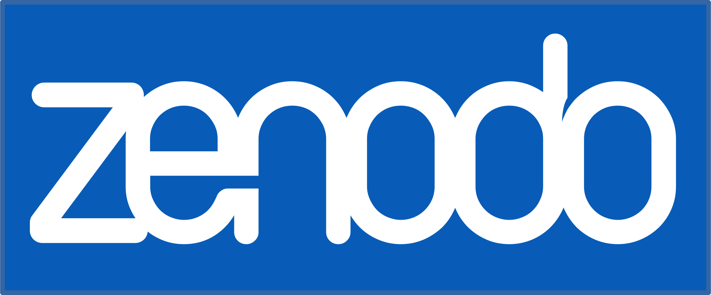

Zenodo
Zenodo allows you to release research artifacts such as code or data in a findable, retrievable, and citable way. Each upload to Zenodo is given a Digital Object Identifier (DOI) that you can use as a citation or link as a URL. Zenodo is built and operated by CERN which provides assurance that the infrastructure will remain available and scale with future demand.
See the section on Zenodo Release Management for details.